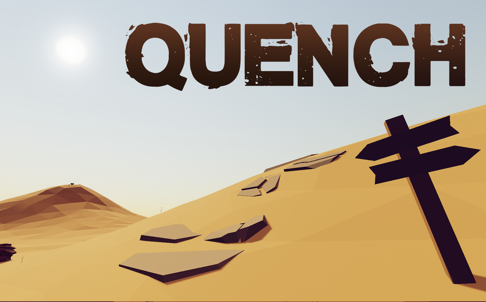

Project link: Quench프로젝트 링크: Quench

- Explored open-world level design with an emphasis on indirect player guidance and immersion.간접적인 플레이어 가이던스와 몰입형 경험에 중점을 둔 오픈 월드 레벨 디자인 탐구
- Created in-game artwork and designed levels.인게임 아트워크 제작, 레벨 설계 수행
- Implemented cinematic elements, including visual effects and camera shake.VFX 및 카메라 셰이크와 같은 시네마틱 요소 구현
Genre: #Adventure #Puzzle #TimeAttack장르: #어드벤쳐 #퍼즐 #타임 어택
Game overview:간단 게임 소개:
Quench is an adventure game inspired by Outer Wilds. Across repeated attempts, solve as many puzzles as possible before time runs out.Quench는 Outer Wilds에서 영감을 받은 어드벤처 게임으로, 시간이 다하기 전에 가능한 한 많은 퍼즐을 반복해서 풀어야 합니다.
You wake in a vast, mysterious desert—the place where your grandfather spent his life searching for a legendary jewel. Beneath the blazing sun, time is running out. Clues lie scattered among the dunes, hidden in the ruins and relics of a forgotten civilisation.광활하고 신비로운 사막에서 눈을 뜹니다. 그곳은 바로 당신의 할아버지가 평생을 바치며 전설의 보석을 찾아 헤맸던 장소입니다. 내리쬐는 태양 아래, 시간은 촉박합니다. 사구 곳곳에는 잊힌 문명의 유적과 유물에 숨겨진 단서들이 흩어져 있습니다.
Can you uncover the truth, escape this endless cycle, and find the ancient treasure before everything resets?과연 진실을 밝혀내고 이 끝나지 않는 순환에서 벗어나, 모든 것이 초기화되기 전에 고대의 보물을 찾아낼 수 있을까요?